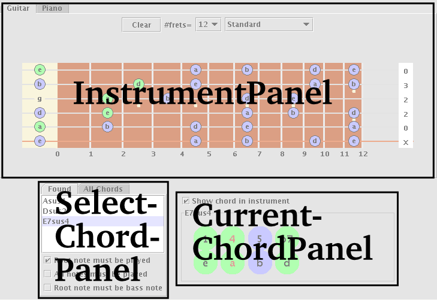
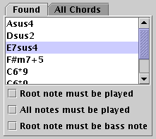
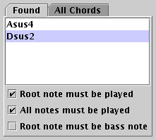
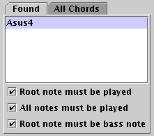

Go back to the Chord Finder.
The ChordFinder applet is intended to help find the names of chords played on a guitar, bass or piano, as well as alternate positions for this chord. "Playing" chords is done by clicking them in a visualization of the instrument. There is a seperate section on finding chords.
The ChordFinder applet should be displayed more or less as below. Its three main components are:
|  |
It is important to understand the difference between green and blue notes (pun not intended). Green notes are manually specified through clicking in the InstrumentPanel, for instance on the guitar's fretboard, or the piano's keyboard. These notes are "played". Blue notes are not actually played, but are part of the current chord displayed in the CurrentChordPanel.
This panel allows you to "play" notes on an instrument (in green), and visualize notes from the chord in the ChordPanel (in blue). It either displays the fretboard of a guitar, or the keyboard of a piano.
Strings can be strummed by clicking at a fret. The 0th fret is the nut. The number of frets and the tuning can be chosen at the top of this panel. Not strumming a string can be achieved by clicking in the tabs notation to the right of the neck, where right handed guitar players would normally strum. Pressing clear removes any notes played.
Essentially as the guitar panel, but then, well, a piano. The number of octaves displayed can be varied.
The name of the currently selected chord is displayed in this panel's border. In the panel itself, a representation of the chord is shown in two rows of circles. The name of the intervals (1,3,b7,...) are listed above, and the corresponding note (c,c3,d#...) below.
Green circles mean that this note is played in the chord found in the InstrumentPanel, and blue means it is not. Red indicates that the note is the bass note (the note with the lowest frequency) being played.
In the example below, the chord Esus4 is displayed. The "e","a","b" notes of this chord are played in the instrument panel, but the "b" is not. The bass note is "a". This corresponds to the note being played in the InstrumentPanels abov.e
The "Show chord in instrument" determines whether or not the current chord is displayed in the InstrumentPanel.
In this panel, you can choose the current chord. It can be chosen from a list of all chords, or a list of chords that match the notes played in the InstrumentPanel.
AllChordsListThis panel lists all possible root notes (c..b) and most common chords. |
FoundChordsListThis tab lists the chords that match notes currently played in the InstrumentPanel. How these chords are found, and what the checkboxes below this list mean is explained in the next section on the page on finding chords. |
This section will probably not make much sense if you have not yet read the page on finding chords, especially the section on filtering chords.
Which chords are listed can be controlled with the check boxes below the list.
|  1) All chords whose notes are a superset of the notes played are listed. |
2) As 1), but the root note of the chord must be played. |
|  3) As 2), but all notes of the chord must be played. |
 4) As 2), and the root note must be the bass note. |
{kind=link}